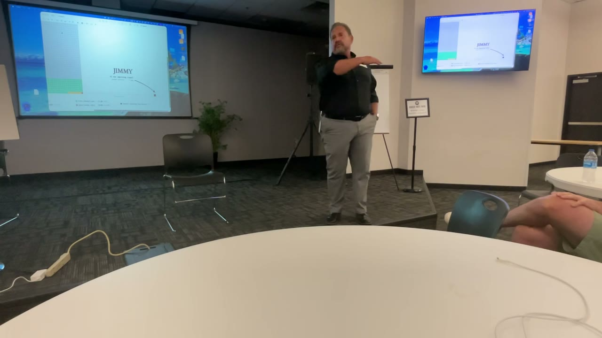

Nov 9 Night · As Launched November 4
Everything that went live on November 4 for Monday's night, recorded in one place: the six Facebook ads, the campaign settings, and the registration and thank-you pages they send people to.
Free AI for Business Night. Monday, Nov 9, 7 to 9pm, Launch Fishers.
The page copies here are archived as launched. The tracking pixel and the live form are turned off on them, so viewing them never counts as a registration.
hands-drop Image: a real frame from the Sept 10 night, Jimmy and Paul.
Headline: Most Hands Drop On The Second Question
Raise your hand if you've tried ChatGPT.
Keep it up if it did real work in your business this week.
Most hands drop. Across the country, about 1 in 7 owners has it actually working.
So if yours dropped, you're not behind. You're early.
Monday, Nov 9, at Launch Fishers, local owners watch real businesses get worked on live, then put it to work on their own phone.
Free. 7 to 9. All you need is your phone and your curiosity.
time-problem Image: a real frame from the Sept 10 night, Jimmy at the podium with the big screen.
Headline: Take One Thing Off Your Plate. Forever.
You don't have a technology problem.
You have a time problem.
Monday night at Launch Fishers, local owners bring the one job that eats their week. We work on real businesses live, and you set yours up on your own phone before you leave. You keep it.
Free. Monday, Nov 9. 7 to 9.
All you need is your phone and your curiosity.
fresh-eyes Image: a real frame from the Sept 10 night, Jamon.
Headline: What A Fresh Pair Of Eyes Finds In Your Business
Three things a fresh pair of eyes found in local businesses this year:
A handyman's name customers can't forget. He doesn't give out his number anymore.
An estimate that makes more money every time it's sent, at the same price.
A bread maker's "problem" that turned out to be the most valuable thing he owns.
Monday, Nov 9, at Launch Fishers, we look at more. Live. Maybe yours.
Free. 7 to 9. Bring your phone and your curiosity.
customers-say Image: a text card in the letter-ad style.
Headline: What Do Your Customers Say That You Don't?
Your customers say something about you that you've never once said about yourself.
It's in your reviews. It's in how they recommend you to a friend.
And it's the exact reason the next customer would pick you over the guy down the street.
Monday, Nov 9, at Launch Fishers, we find it for real local businesses, live. Then you find yours, on your own phone.
All you need is your phone and your curiosity. Free. 7 to 9.
paperwork Image: a yellow text card.
Headline: Your Hands Are Safe. Your Paperwork Isn't.
The call you can't answer with your hands full.
The quote you meant to send Tuesday.
The follow-up you forgot.
None of that is your trade. All of it can come off your plate.
A free owners' night with Jimmy and Paul. Monday, Nov 9, Launch Fishers, 7 to 9.
Walk out with one of those handled. All you need is your phone and your curiosity.
jamon-video Video: Jamon's Story, the 62-second vertical cut. Every word is a real recording from the Sept 10 night.

Headline: You Don't Have Time To Learn AI. Good.
You don't have time to learn AI.
Neither did Jamon. Between running a handyman business with his son and every job on the calendar, the last thing he needed was one more thing to figure out.
Jimmy told him he'd never have to touch it.
Two months later, Jamon was booked six months out, with his business on TV and the radio.
Come see for yourself exactly how we did it, live, Monday night, Nov 9, at Launch Fishers, as Jimmy and Paul work on real local businesses right in front of you.
Bring your phone and your curiosity. What you're going to see is going to amaze you.
Free. 7 to 9.
Recorded November 4, the day the ads went live. Ad text as written and approved by Daegan; campaign settings as built by Jimmy's Claude.